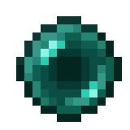

The parameter of interest is \(p\), a population proportion.
The statistic is \(\hat{p}\), a sample proportion.
The Alternative hypothesis is \(p > k\) or \(p < k\) or \(p \neq k\).
The Null hypothesis is \(p=k\)
The Standard Error is \(SE = \sqrt{\frac{k(1-k)}{n}}\).
The test statistic is \(Z = \frac{\hat{p}-k}{SE}\)
A hot day in Phoenix
Over the previous century (1911-2011), the proportion of days above 110°F in Phoenix, Arizona was 12/365. Consider this proportion a baseline for comparison. In the decade 2011-20, the proportion was 27/365. (Source, NOAA.) We wish to test whether the probability of a hot day now exceeds 12/365.
Is the data consistent with the hypothesis?
Find the standard error.
Find the Z-score of this measurement.
What is the p-value of this Z-score?
Is the difference likely due to chance?
A hot day in Phoenix (solution)
# Square root function needs importfrom math import sqrt #Null hypothesis theory for pp =12/365#Observed proportionp2 =27/365# 10*365 days, plus leap days from '12, '16, '20)n =3653SE = sqrt(p*(1-p)/n) #Canned formula, using null value.Z = (p2-p)/SE # (observed - predicted) / SE# Import stats for "normal distribution" toolfrom scipy import stats# Find p-value as (left) tail area on normal distributionpvalue = stats.norm.cdf(-Z)print(Z)print(pvalue)
13.929583127968339
2.0939634488594107e-44
The p-value is miniscule. The effect is not due to chance. The change is statistically significant.
Represent
About 50.5% of the US population is female (source: US Census). The US Senate (119th congress) has 26 women out of 100 senators (source: CAWP). We wish to test the theory that the US electoral system elects women with probability \(p < .505\).
Is the data consistent with the hypothesis?
Assume that senators’ genders are completely random (post-patriarchal utopia theory? \(p = .505\)), and calculate the standard error for such a sample.
Calculate the Z-score of the measurement \(26/100\).
Calculate a p-value for that Z-score. Is the discrepancy plausibly due to chance?
A biased coin 🪙
On game night, your friend always conducts coin flips with his “lucky coin,” a huge, heavy, American Silver Eagle. He’s lucky with it. You’re concerned that a coin might be biased. Working together, you perform an experiment with 1000 coin flips. He wins 525 of them.
Is the data consistent with the hypothesis?
Calculate the standard error for this experiment.
Calculate the Z-score of your result.
Calculate the p-value of the result.
Conclude: Is your friend busted for unfair play?
A lucky streak
In 2020, a gamer called Dream uploaded a world record Minecraft speedrun video. In it, Dream performed a certain randomized action (“trading for ender pearls”) 262 times, with success 42 times, a 16% success rate. Game logic dictates that success should be purely random (skill-independent) with a probability of 4.27%.
Is the data consistent with the hypothesis?
Calculate the standard error for this experiment.
Calculate the Z-score of Dream’s sample.
Calculate a p-value for that Z-score.
Is good luck a credible explanation for these events?

Z scores vs Z scores
Z score for the individual: (data value - mean) / σ Used to assess how out of whack one data value is, in relation to its distribution.
Z score for the experiment: (test statistic - null prediction) / SE Used to assess how strongly different from prediction is the experimental result.
Threshold of Significance
How small is small?
If \(p\) is small, we have a statistically significant result. If \(p\) is large, it’s inconclusive. How small is small?
\(\alpha = 0.05\) is a typical threshold of significance (or significance level). This is a social norm, which means it’s made up and can change.
\(\alpha = 0.005\) would be a better, stricter choice, requiring stronger evidence and producing fewer false positives results.
We must choose the threshold of significance before collecting data. Why?